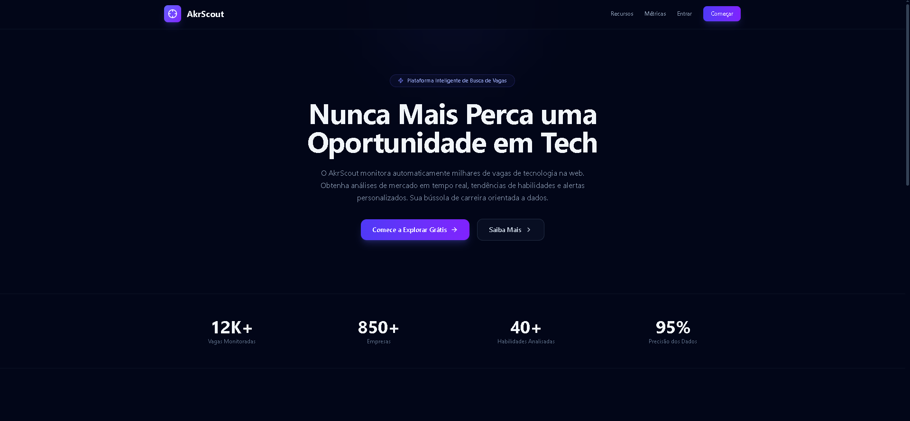

AkrScout
Coleta vagas de tecnologia todo dia e transforma os anúncios em dados de mercado.
Um cron diário no GitHub Actions dispara um scraper em Python (httpx e BeautifulSoup) que busca as vagas, extrai as skills, normaliza os anúncios e descarta duplicatas por hash de conteúdo antes do upsert no Supabase. O front em React lê views agregadas do PostgreSQL, protegidas por RLS, para mostrar skills em alta, salários por senioridade e vagas salvas.
- Coleta
- Python 3.12 · httpx · BeautifulSoup · lxml
- Dados
- PostgreSQL no Supabase · 6 tabelas, 6 views, RLS
- Automação
- GitHub Actions · cron diário
- Interface
- React 19 · Vite · Tailwind 4 · Recharts
- Deploy
- Vercel

 KodeKloud
KodeKloud